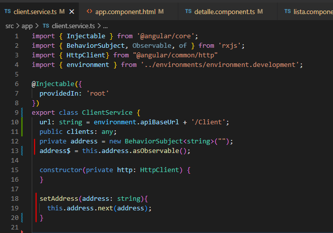
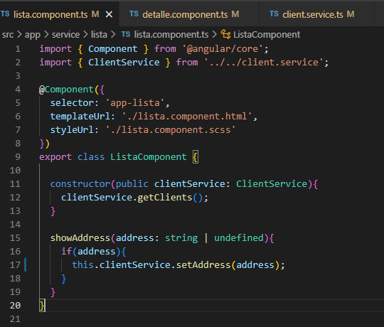
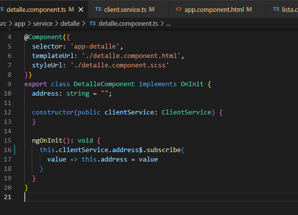

Service
1. Agregar en el servicio el Subject, el Observable del Subject, y una funcion para cargar los datos en el Subject

2. Crear en un componente una funcion para pasar datos al Subject

3. Agregar en otro componente el Subscribe del Observable
